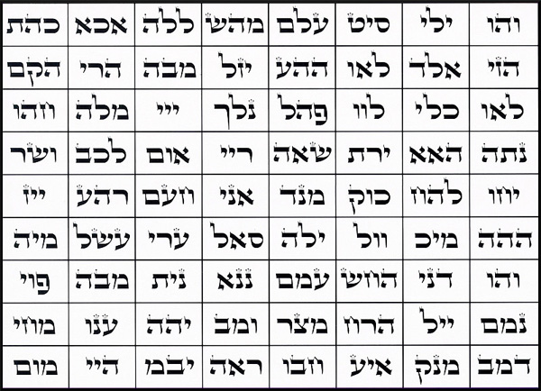

Step 1.
When you are finished, tear the paper to shreds and throw it into the toilet, and make sure you ‘go’ on it, and then flush it. Make sure the paper you print it out on is thin and won’t clog your toilet.
OR you can defile in other ways, such as rubbing it out with your shoe and throwing it into some sewage. Don’t worry, Demons can give you ideas. The point here is to defile this in as rotten a way as possible. This is the ultimate blasphemy and attack against the enemy so-called "God" This can be done as many times as you wish, the more the better.

It also helps to muster up as much hatred as possible when doing this working. When you are finished, say either aloud or in your mind, HAIL SATAN!!
We'll also be reversing those “Names of God” and vibrating them backwards soon.
YAH
EL
SHADDAI
TSVA’OT
HASHEM
ADONAI
EHYEH ASHER EHYEH
HAMAKOM
ELOHIM
EL ELYON
EL GIBBOR
EL OLAM
Back to
the Main Page for the Reverse Rituals
Begin by printing out, using a PC printer, the box with the 72 names below, and then take a marker or a pen and blot out each of the 3 Hebrew letters in the boxes.
Step 2.
Do the same with the list of the “Names of God” below. Thoroughly blot out each one. And then do the very same with the paper.
YHVH